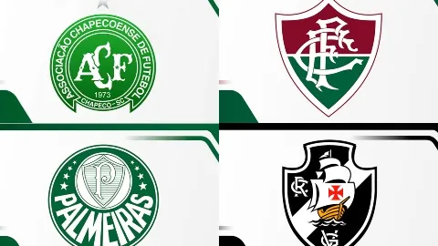

Revista elege os 100 escudos mais bonitos do mundo, quatro times brasileiros estão na lista
17/09/2023
A revista inglesa Four Four Two fez uma publicação em que elege os 100 escudos de futebol mais bonitos de todos os tempos. Quatro times brasileiros entraram na lista: Chapecoense, Fluminense, Palmeiras e Vasco.

Neymar estreia pelo Al-Hilal com goleada e participação em quatro gols
17/09/2023
Neymar fez sua estreia pelo Al-Hilal, da Arábia Saudita, um mês após seu anúncio, em um clássico contra o Al-Riyadh na sexta-feira (15), com uma vitória por 6 a 1. O brasileiro começou no banco de reservas, mas quando entrou em campo aos 19 minutos do segundo tempo, o Al-Hilal já estava liderando por 2 a 0. Mesmo assim, Neymar teve um papel importante na construção da goleada, contribuindo diretamente para quatro dos gols marcados pelo Al-Hilal desde sua entrada em campo.